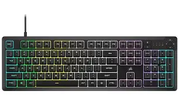
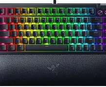
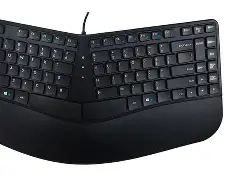

⌨️ Keyboard - Your Primary Input Device
The keyboard is one of the most essential input devices for computers. It allows you to type text, execute commands, and interact with software. Keyboards come in various types, switch technologies, and layouts to suit different needs and preferences.
Switch types determine how each key feels and sounds. Layout (e.g., QWERTY, AZERTY, Dvorak) determines key arrangement. Form factor ranges from full-size (with numpad) to compact (60% layout). Keyboards can be wired or wireless, and some include backlighting, macro keys, and programmable functions.
Membrane Keyboard
Purpose: Basic typing, office work, quiet operation
Membrane keyboards use a rubber dome layer beneath the keys. They're the most common and affordable type, found in offices, schools, and homes. They're quiet, spill-resistant, and require little force to press.

| Switch Type | Rubber Dome / Membrane |
|---|---|
| Actuation Force | 50-60g |
| Key Travel | 3-4mm |
| Noise Level | Quiet |
| Lifespan | 5-10 million keystrokes |
| Target Users | Office workers, students, general use |
| Advantages | Affordable, quiet, spill-resistant |
| Limitations | Mushy feel, less durable, limited customization |
Mechanical Keyboard
Purpose: Typing, gaming, customization, durability
Mechanical keyboards use individual mechanical switches under each key. They're highly durable, offer tactile and audible feedback, and are customizable with different switch types, keycaps, and cases. They're favored by typists, gamers, and enthusiasts.
.webp)
Common Switch Types
| Switch | Type | Actuation Force | Feel | Noise |
|---|---|---|---|---|
| Cherry MX Blue | Clicky | 50g | Tactile + Click | Loud |
| Cherry MX Brown | Tactile | 45g | Tactile | Quiet |
| Cherry MX Red | Linear | 45g | Smooth | Quiet |
| Cherry MX Speed Silver | Linear | 45g | Smooth (short travel) | Quiet |
| Gateron Yellow | Linear | 50g | Smooth | Quiet |
| Lifespan | 50-100 million keystrokes |
|---|---|
| Target Users | Typists, gamers, enthusiasts |
| Advantages | Durable, customizable, great feel |
| Limitations | Expensive, heavy, can be loud |
Gaming Keyboard
Purpose: Gaming, RGB lighting, macro functions
Gaming keyboards are designed for gamers with features like RGB lighting, programmable macro keys, N-key rollover (anti-ghosting), and fast response times. They often use mechanical switches with linear or tactile options optimized for gaming.

| Switch Type | Mechanical (linear or tactile) |
|---|---|
| Features | RGB, macros, N-key rollover |
| Polling Rate | 1000Hz (1ms response) |
| Lifespan | 50-80 million keystrokes |
| Target Users | Gamers, streamers |
| Advantages | Fast, customizable, great for gaming |
| Limitations | Expensive, often bulky |
Ergonomic Keyboard
Purpose: Comfort, reduced strain, long typing sessions
Ergonomic keyboards are designed to reduce wrist and hand strain by promoting a more natural typing position. They feature split layouts, curved key rows, and integrated wrist rests. They're ideal for professionals who type for extended periods.

| Layout | Split / Curved / Tented |
|---|---|
| Features | Wrist rest, adjustable tilt |
| Switch Type | Membrane or Mechanical |
| Target Users | Office workers, programmers, writers |
| Advantages | Reduces strain, comfortable, promotes good posture |
| Limitations | Expensive, requires adjustment period |
Wireless Keyboard
Purpose: Portability, clean desk setup, multi-device
Wireless keyboards connect via Bluetooth or 2.4GHz USB receiver. They offer freedom from cables and are ideal for portable setups, HTPCs, and multi-device users. They're available in both membrane and mechanical variants.
.webp)
| Connection | Bluetooth 5.0+, 2.4GHz |
|---|---|
| Battery Life | 30 days - 2 years (depending on usage) |
| Range | Up to 10m (Bluetooth) / 15m (2.4GHz) |
| Device Support | 3+ devices (multi-device models) |
| Target Users | Travelers, home theater, minimalists |
| Advantages | No cables, portable, clean setup |
| Limitations | Battery charging, potential latency |